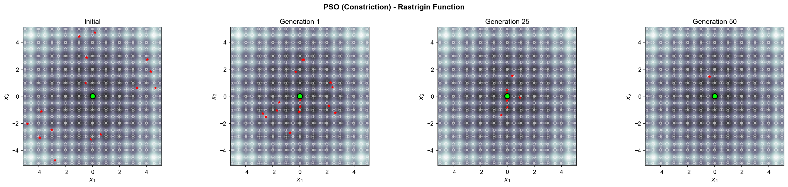
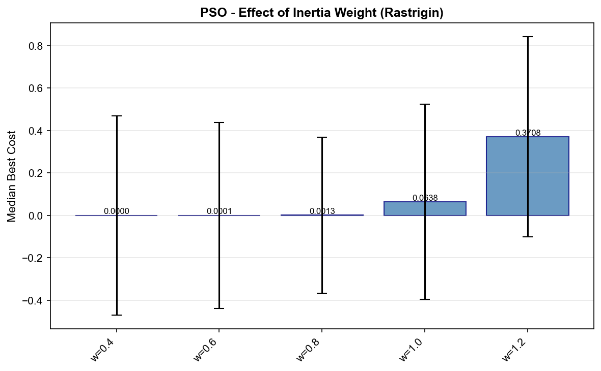
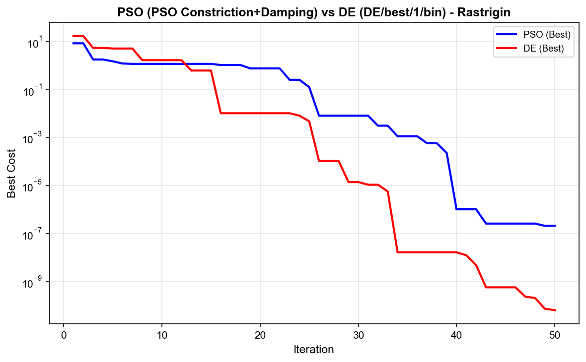

Particle Swarm Optimization on Rastrigin
Tuning swarm dynamics on a notoriously multimodal benchmark to reach the global optimum far faster — and validating it rather than trusting a single lucky run.
The problem
The Rastrigin function is a classic optimization trap: a smooth global bowl studded with dozens of regular local minima. Naïve optimizers get stuck in the nearest dip. The task was to make Particle Swarm Optimization escape them reliably — and quickly.
Approach
- Implemented PSO with constriction and inertia-damping variants, plus Differential Evolution as a cross-check.
- Ran systematic parameter sweeps over inertia weight, the cognitive/social coefficients (c1, c2), population size and iteration budget.
- Validated convergence across multiple runs with summary statistics — not a single seed.
Results
Tuned inertia damping plus a well-chosen population let the swarm converge in 16 iterations instead of 173 — a 90.8% reduction — while still reaching the global optimum. The sweeps showed inertia weight as the dominant lever: too high and the swarm never settles, too low and it stalls in a local minimum.




What I took away
- Metaheuristic performance lives in the hyperparameters — sweep them, don't guess them.
- Report convergence over multiple runs; a single run hides variance and luck.
- A second algorithm (DE) is a cheap sanity check on whether a result is real.